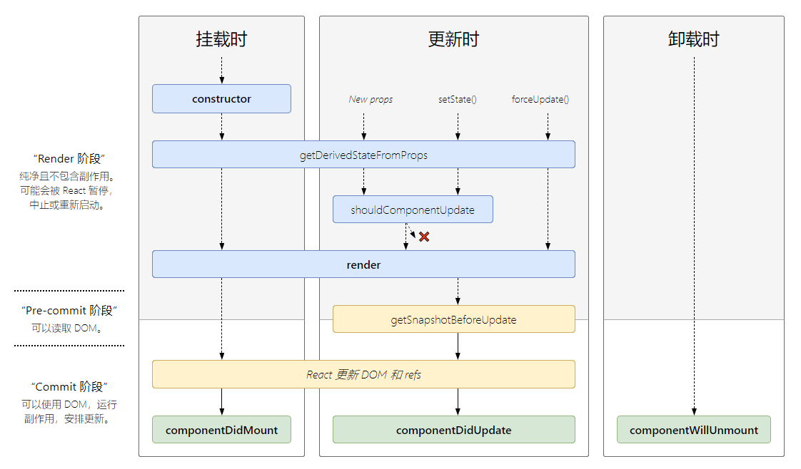

React.createElement
1 | React.createElement(type, [props], [...children]); |
创建并返回指定类型的新 React 元素，类型参数可以是原生标签名字符串，也可以是 React 组件或是 React fragment。
React.cloneElement
1 | React.cloneElement(element, [props], [...children]); |
几乎等同于：
1 | <element.type {...element.props} {...props}> |
以 element 为样板克隆并返回新的 React 元素。返回元素的 props 是将新的 props 与原始元素的 props 浅层合并后的结果，新的子元素将取代现有的子元素，而来自原始元素的 key 和 ref 将被保留。
setState
setState 通过一个队列机制来实现 state 更新，当执行 setState() 时，会将需要更新的 state 浅合并后放入状态队列，而不会立即更新 state，队列机制可以高效地批量更新 state。
setState 并不是真正意义上的异步操作，它只是模拟了异步的行为。
setState只在合成事件和生命周期函数中是“异步”的，在原生事件和setTimeout等不受react控制的场景中都是同步的。setState的“异步”并不是说其内部由异步代码实现，其本身执行的过程和代码都是同步的，只是合成事件和生命周期函数的调用顺序在更新之前，导致在合成事件和生命周期函数中没法立马拿到更新后的值，形式了所谓的“异步”，可以在第二个参数callback中访问更新后的state。setState的批量更新优化也是建立在“异步”（合成事件、生命周期函数）之上的，在原生事件和setTimeout中并不会批量更新，在“异步”中如果对同一个值进行多次setState，setState的批量更新策略会对其进行覆盖，取最后一次的执行，可以通过setState((state, props) => stateChange[, callback])来应对多次setState但是不需要将内容合并的场景。
生命周期

static getDerivedStateFromProps
1 | getDerivedStateFromProps(props, state); |
getDerivedStateFromProps 会在调用 render 方法之前调用，并且在初始挂载及后续更新时都会被调用，使用返回的对象来更新 state，如果返回 null 则不更新任何内容。
getDerivedStateFromProps 是静态方法且是纯函数，不能访问到组件实例，通过这种方式来限制在异步渲染的渲染（render）阶段产生副作用。
此方法适用于罕见的用例，即
state的值在任何时候都取决于props。
与
UNSAFE_componentWillReceiveProps不同的是getDerivedStateFromProps会在每次渲染前触发，而UNSAFE_componentWillReceiveProps则仅在父组件重新渲染时触发，自身状态改变引起的重渲染不会触发。
getSnapshotBeforeUpdate
1 | getSnapshotBeforeUpdate(prevProps, prevState); |
getSnapshotBeforeUpdate() 在最近一次渲染提交到 DOM 之前调用，此时 state 已经更新。使用它能在组件发生更改之前从 DOM 中捕获一些信息（例如，滚动位置）。此生命周期的任何返回值都将作为第三个参数传递给 componentDidUpdate()。
Context
当 Provider 的 value 值发生变化时，它内部的所有消费组件都会重新渲染，Provider 及其内部的 Consumer 组件都不受制于 shouldComponentUpdate 和 React.memo。
通过使用与 Object.is 相同的算法来检测 value 的变化。
获取 context 的方法：
Class.contextType
1 | class MyClass extends React.Component { |
Context.Consumer
1 | <MyContext.Consumer> |
useContext
1 | const context = useContext(MyContext); |
只有当组件所处的树中没有匹配到 Provider 时，其 defaultValue 参数才会生效。将 undefined 传递给 Provider 的 value 时，defaultValue 不会生效。
Portals
Portal 提供了一种将子节点渲染到存在于父组件以外的 DOM 节点的方案。
1 | /** |
尽管 portal 可以被放置在 DOM 树中的任何地方，但其行为和普通的 React 子节点行为一致。由于 portal 仍存在于 React 树，像 context 这样的功能特性仍可以使用。又由于 React 使用合成事件（并不是绑定在对应 DOM 节点上，而是统一绑定在 document 上），所以一个从 portal 内部触发的事件会一直冒泡至包含 React 树的祖先，即便这些元素并不是 DOM 树中的祖先。
ReactDOM.createPortal的返回值与React.createElement的返回值结构相同，同属 React 元素。
Refs 及转发
适合使用 refs 的情况：
管理焦点，文本选择或媒体播放。
触发强制动画。
集成第三方 DOM 库。
避免使用 refs 来做任何可以通过声明式实现来完成的事情。
创建 Refs
React.createRef()useRef(initialValue)
useRef 返回的 ref 对象在组件的整个生命周期内保持不变。
1 | import React, { useRef, useEffect, createRef, useState } from 'react'; |
访问 Refs
对节点的引用可以在 ref 的 current 属性中被访问。
ref 的值根据节点的类型而有所不同：
当 ref 属性用于 HTML 元素时，ref 接收底层 DOM 元素作为其
current属性。当 ref 属性用于自定义组件时，ref 对象接收组件的挂载实例作为其
current属性。不能在函数组件上使用 ref 属性，因为它们没有实例。
React 会在组件挂载时给
current属性传入 DOM 元素，并在组件卸载时传入null值。ref 会在componentDidMount或componentDidUpdate生命周期钩子触发前更新。
useRef返回的 ref 对象，其current属性被初始化为传入的参数（initialValue）。
因为 useRef 返回的 ref 对象在组件的整个生命周期内保持不变，因此它可以很方便地保存任何可变值，其类似于在 class 中使用实例字段的方式。
回调 Refs
回调 Refs 接受 React 组件实例或 HTML DOM 元素作为参数。
React 将在组件挂载时，调用 ref 回调函数并传入 DOM 元素，当卸载时调用它并传入
null。在componentDidMount或componentDidUpdate触发前，React 会保证 refs 一定是最新的。
如果 ref 回调函数是以内联函数的方式定义的，在更新过程中它会被执行两次，第一次传入参数
null，然后第二次会传入参数 DOM 元素。这是因为在每次渲染时会创建一个新的函数实例，但是大多数情况下它是无关紧要的。
Refs 转发
refs 并不包含在 props 中，可以使用 React.forwardRef((props, ref) => {}) 包裹组件，通过第二个参数获取传入的 refs。
第二个参数
ref只在使用React.forwardRef定义组件时存在，常规函数和 class 组件不接收ref参数。
异步渲染
React Fiber 将 React 的工作分为两个阶段
渲染（render）阶段
该阶段确定需要进行哪些更改，比如 DOM。在此阶段，React 调用
render，然后将结果与上次渲染的结果进行比较。该阶段是可以被 React 打断的，一旦被打断，这个阶段所做的所有事情都被废弃，当 React 处理完紧急的事情回来，依然会重新渲染这个组件，这时候第一阶段的工作会重做一遍。提交（commit）阶段
该阶段发生在 React 插入，更新及删除 DOM 节点的时候。该阶段一旦开始就不能中断，并且会调用
componentDidMount和componentDidUpdate之类的生命周期方法。
渲染阶段的生命周期函数包括：
constructorcomponentWillMountcomponentWillReceivePropscomponentWillUpdategetDerivedStateFromPropsshouldComponentUpdaterendersetState更新函数（第一个参数）
渲染阶段的行为意味着 React 可以在提交之前多次调用渲染阶段的生命周期方法，或者在不提交的情况下调用它们，因此不要在它们内部编写副作用相关的代码，并且由于 Suspense 的存在，render 中调用的函数应该至少是幂等的。
错误边界
如果一个 class 组件中定义了 static getDerivedStateFromError() 或 componentDidCatch() 这两个生命周期方法中的任意一个（或两个）时，那么它就变成一个错误边界，当抛出错误后，可使用 static getDerivedStateFromError() 渲染备用 UI ，使用 componentDidCatch() 打印错误信息。
getDerivedStateFromError 会在渲染（render）阶段中被调用，componentDidCatch 会在提交（commit）阶段中被调用，因此在 getDerivedStateFromError 中不应该出现副作用。
错误边界无法捕获以下场景中产生的错误：
事件处理
异步代码（例如
setTimeout或requestAnimationFrame回调函数）服务端渲染
它自身抛出来的错误（并非它的子组件）
解决横切关注点的三种方式（逻辑复用）
高阶组件
render props
Hooks
高阶组件
高阶组件本质是一个纯函数，接收一个或多个组件，返回一个全新的组件。
高阶组件的实现
- 属性代理
1 | function HOC(Comp) { |
- 反向继承
1 | function HOC(Comp) { |
相较于属性代理方式，使用反向继承方式实现的高阶组件的特点是允许高阶组件通过 this 访问到原组件，还可以劫持原组件的生命周期函数（包括 render），但只适用于 class 组件。
属性代理是从“组合”的角度出发，从外部去操作原组件。
反向继承则是从“继承”的角度出发，从内部去操作原组件。
React.memo
React.memo 为高阶组件，作用与 React.PureComponent 相似，但只适用于函数组件。
如果函数组件在给定相同 props 的情况下渲染相同的结果，可以将其包装在 React.memo 中，以此通过记忆组件渲染结果的方式来提高组件的性能。在这种情况下，React 将跳过渲染组件的操作并直接复用最近一次渲染的结果。
React.memo 仅检查 props 变更，如果函数组件被 React.memo 包裹，且其实现中拥有 useState 或 useContext 的 Hook，当 state 或 context 发生变化时，它仍会重新渲染。
默认情况下其只会对复杂对象做浅层对比，如果想要控制对比过程，可将自定义的比较函数通过第二个参数传入来实现，且返回值与是否渲染的关系和
shouldComponentUpdate()相反。
render props
render prop 是一个用于告知组件需要渲染什么内容的函数 prop。
可以使用带有 render props 的常规组件来实现大多数高阶组件。
任何被用于告知组件需要渲染什么内容的函数 prop 在技术上都可以被称为 render prop。
使用 render props 可能会抵消使用
React.PureComponent带来的优势，因为 render props 可能总是会生成一个新的函数。
Hooks
useState
使用 useState 更新 state 时总是替换它而不是像 setState 一样合并它。
如果新的 state 需要通过使用先前的 state 计算得出，那么可以将函数传递给 setState，该函数将接收先前的 state，并返回一个更新后的值。如果更新函数的返回值与当前的 state 完全相同，React 将跳过子组件的渲染及 effect 的执行，不使用函数式更新也是如此，内部使用 Object.is() 进行比较。
initialState 参数可以是函数，其只会在组件的初始渲染中被调用，后续渲染时会被忽略。如果初始 state 需要通过复杂计算获得，则可以通过该函数计算并返回初始的 state，该过程称为惰性初始 state。
1 | const [state, setState] = useState(() => { |
useEffect
可以把 useEffect 看做 componentDidMount，componentDidUpdate 和 componentWillUnmount 这三个函数的组合。
每次重新渲染都会生成新的 effect 替换掉之前的。
某种意义上讲，effect 更像是渲染结果的一部分 —— 每个 effect “属于”一次特定的渲染。
与 componentDidMount 或 componentDidUpdate 不同，在浏览器完成布局与绘制之后，传给 useEffect 的函数才会被延迟调用，因此不会阻塞浏览器更新视图。
React 会在执行当前 effect 之前对上一个 effect 进行清除，如果 effect 返回一个函数，React 将会在执行清除操作时调用它。
React 将按照 effect 声明的顺序依次调用组件中的每一个 effect。
如果某些特定值在两次重渲染之间没有发生变化，你可以通知 React 跳过对 effect 的调用，只要传递数组作为 useEffect 的第二个可选参数即可。
1 | useEffect(() => { |
如果数组中有多个元素，即使只有一个元素发生变化，React 也会执行 effect。
如果想让 effect 仅在组件挂载和卸载时执行则可以传递一个空数组 [] 作为第二个参数。
useLayoutEffect
函数签名与 useEffect 相同，但它会在所有的 DOM 变更之后，浏览器重新绘制之前同步调用 effect，因此会阻塞浏览器更新视图。
useLayoutEffect与componentDidMount、componentDidUpdate的调用阶段是一样的。
useContext
接收一个 context 对象（React.createContext 的返回值）并返回该 context 的当前值，context 的值由上层组件中距离当前组件最近的 <Context.Provider> 的 value prop 决定。
当组件上层最近的 <Context.Provider> 更新时，该 Hook 会触发重渲染，并使用最新的 context 值。
useReducer
1 | const [state, dispatch] = useReducer(reducer, initialArg, init); |
useState 的替代方案，接收一个形如 (state, action) => newState 的 reducer，并返回当前的 state 以及与其配套的 dispatch 方法。
有两种不同初始化 useReducer state 的方式。
- 将初始 state 作为第二个参数传入
useReducer是最简单的方法：
1 | const [state, dispatch] = useReducer(reducer, { count: initialCount }); |
React 不使用
state = initialState这一由 Redux 推广开来的参数约定，因为有时候初始值依赖于 props，因此需要在调用 Hook 时指定。
- 惰性地创建初始 state。将
init函数作为useReducer的第三个参数传入，这样初始 state 将被设置为init(initialArg)。
如果
dispatch后的 state 与当前 state 相同，React 将跳过子组件的渲染及副作用的执行，内部使用Object.is比较算法来比较 state。
dispatch永远不会变，因此使用 context 传递dispatch不会使子组件重新渲染。
useCallback
1 | const memoizedCallback = useCallback(() => { |
把内联回调函数及依赖项数组作为参数传入 useCallback，它将返回该回调函数的缓存版本，该回调函数仅在某个依赖项改变时才会更新。
useCallback(fn, deps) 相当于 useMemo(() => fn, deps)。
useMemo
1 | const memoizedValue = useMemo(() => computeExpensiveValue(a, b), [a, b]); |
与
useCallback的区别：useCallback返回一个 memoized 回调函数，而useMemo返回一个 memoized 值。
useMemo 仅会在某个依赖项改变时才重新计算 memoized 值。
传入 useMemo 的函数会在渲染期间执行。
可以把 useMemo 作为性能优化的手段，但不要把它当成语义上的保证。将来 React 可能会选择“遗忘”以前的一些 memoized 值，并在下次渲染时重新计算它们，因此应该先编写在没有 useMemo 的情况下也可以执行的代码，之后再考虑在代码中添加 useMemo 以达到优化性能的目的。
useRef
useRef 返回一个 ref 对象，其 .current 属性被初始化为传入的参数。返回的 ref 对象在组件的整个生命周期内保持不变。
当 ref 对象内容发生变化时，useRef 并不会发出通知，变更 .current 属性也不会引发组件重新渲染。如果想要在 React 绑定或解绑 DOM 节点的 ref 时运行某些代码，则需要使用回调 ref 来实现。
useImperativeHandle
1 | useImperativeHandle(ref, createHandle, [deps]); |
useImperativeHandle 可以自定义 ref 暴露给父组件的实例值，应当与 forwardRef 一起使用。
1 | function FancyInput(props, ref) { |
父组件可以调用 inputRef.current.focus();
useDebugValue
1 | useDebugValue(value); |
useDebugValue 用于在 React 开发者工具中显示自定义 hook 的标签。
合成事件
当需要使用浏览器的底层事件时，可使用 nativeEvent 属性来获取。
事件处理函数将在冒泡阶段被触发，如需注册捕获阶段的事件处理函数，则应为事件名添加 Capture，例如，处理捕获阶段的点击事件应使用 onClickCapture 而不是 onClick。
事件池
出于性能考虑，SyntheticEvent 是合并而来，这意味着 SyntheticEvent 对象可能会被重用，且在事件回调函数被调用后，所有的属性都会无效（置为 null），所以不能通过异步访问事件。
如果想异步访问事件属性，需在事件中调用
event.persist()，此方法会从池中移除该合成事件，允许用户代码保留对事件的引用。
使用状态管理工具的场景
某个组件的状态需要被共享；
某个状态需要在任何地方都可以拿到；
一个组件需要改变全局状态；
一个组件需要改变另一个组件的状态；